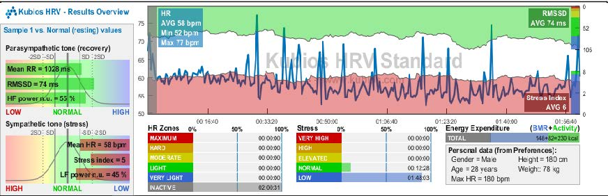
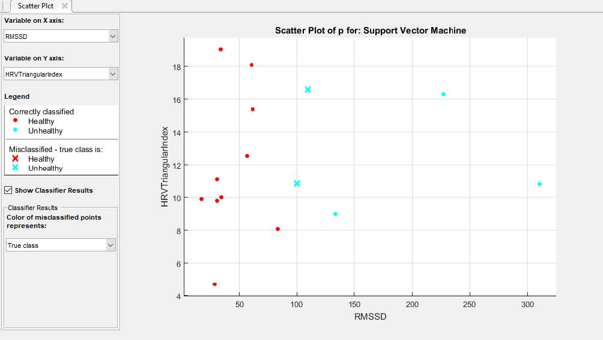

Biomedical Systems
I have taken up a lateral course of Biomedical Systems, under Dr. Niladri Bihari Puhan, Associate Professor, School of Electrical Sciences, IIT Bhubaneswar. This course was different from my usual courses in the field of Mechanical Engineeing. The course dealt with processing of signals and extracting the information required for us. As part of this course, me and a fellow student, Mr. B Venkata Swamy, have worked on ECG Signals, to study them and try to detect the abnormalities in the signal and give a warning to the the nearby health professional. Arrhythmic beat classification is mainly used in electrocardiogram (ECG) abnormality detection for identifying heart related problems. ECG signal preprocessing and support vector machine-based arrhythmic beat classification are performed to categorize into Healthy and Unhealthy subjects.
In ECG signal preprocessing, a Threshold Filter is used to achieve high speed and low latency design with less computational elements. Kubios HRV Standard application is used for HRV feature extraction from preprocessed signal and machine learning techniques are used for performing arrhythmic beat classification. More emphasis is given to the feature, HRV (Heart Rate Variability). HRV is extracted from the ECG signal variations that is more powerful in identification of cardiac disorders and associated diseases. Time domain and frequency domain features can be derived from the extracted HRV features. Our approach for this problem can be categorized as:
- Collection of raw electrocardiograms (ECG) signal;
- Preprocessing of ECG signal;
- R-peak detection;
- Frequency domain feature extraction from HRV signal; and
- SVM classification into Healthy and Unhealthy.
We have used a threshold filter for pre-processing the signal and further filtered it to detect R Peaks. The following code is written in MATLAB:
clear ecg samplingrate corrected filtered1 peaks1 filtered2 peaks2 fresult;
switch(demo)
case 1,
plotname = 'Sample 1';
load '100.txt';
case 3,
plotname = 'Sample 2';
load 'ecg.txt';
end
% Remove lower frequencies
fresult=fft(ecg);
fresult(1 : round(length(fresult)*5/samplingrate))=0;
fresult(end - round(length(fresult)*5/samplingrate) : end)=0;
corrected=real(ifft(fresult));
% Filter - first pass
WinSize = floor(samplingrate * 571 / 1000);
if rem(WinSize,2)==0
WinSize = WinSize+1;
end
filtered1=ecgdemowinmax(corrected, WinSize);
% Scale ecg
peaks1=filtered1/(max(filtered1)/7);
% Filter by threshold filter
for data = 1:1:length(peaks1)
if peaks1(data) < 4
peaks1(data) = 0;
else
peaks1(data)=1;
end
end
positions=find(peaks1);
distance=positions(2)-positions(1);
% Returns minimum distance between two peaks
for data=1:1:length(positions)-1
if positions(data+1)-positions(data)<distance
distance= positions(data+1)-positions(data);
end
end
% Optimize filter window size
QRdistance=floor(0.04*samplingrate);
if rem(QRdistance,2)==0
QRdistance=QRdistance+1;
end
WinSize=2*distance-QRdistance;
% Filter - second pass
filtered2=ecgdemowinmax(corrected, WinSize);
peaks2=filtered2;
for data=1:1:length(peaks2)
if peaks2(data)<4
peaks2(data)=0;
else
peaks2(data)=1;
end
end
We were able to locate R Peaks in the signal and further sent this R-R Interval ASCII files to the application KUBIOS HRV
Standard. We were able to extract Heart Rate Variability (HRV) features. There are 14 well known time domain and frequency domain HRV
features. Time domain HRV parameters used are RR mean (ms), RR Std (ms), HR mean (bpm), HR STD (bpm), RMSSD (ms), NN50, pNN50, HRV
Triangular Index, TINN (ms). Frequency domain parameters used are: VLF Power (ms2), LF Power (ms2), HF Power (ms2) and LF/HF Ratio.
Power Description for VLF is from 0Hz to 0.04Hz, for LF it is from 0.04Hz to 0.15Hz and for HF it is 0.15Hz to 0.4Hz.
HRV extraction from the ECG file of a Young Adult looked like this:

Time Domain Features
Frequency Domain Features
 After the extraction of HRV features, we have exported those parameters as .csv (comma delimited) file, as shown here.
Thereby, we have trained the Classifiers with our samples and exported the data as a function called trainedfunction to determine the health of ECG.
The code is as follows:
After the extraction of HRV features, we have exported those parameters as .csv (comma delimited) file, as shown here.
Thereby, we have trained the Classifiers with our samples and exported the data as a function called trainedfunction to determine the health of ECG.
The code is as follows:
p = readtable('ECG with parameters.csv');
sampleTable = table(SDNN, RMSSD, HRV Triangular Index, VLF, LF, HF, LF/HF);
yfit = trainedclassifier.predictFcn(sampleTable);
Using the data obtained till now, we can determine if the ECG belongs to Healthy or an Unhealthy person. The Support Vector Machine (SVM) is widely used for
classification of features extracted from ECG data compared to other machine learning techniques such as decision tree classifier, genetic algorithm and deep learning.
K-Nearest-Neighbor (KNN) Rule is widely recognized as a sample classification technique in many applications. In the SVM classification-based abnormality detection
method, extracted R peaks are considered after performing ECG signal preprocessing. Few existing techniques are time-consuming and require complex computations.
In addition, morphological ECG features are not feasible while dealing with noisy data. After Classification and training, our plot looked like this:

 Accuracy of several classifiers we have trained are shown here, with Quadratic SVM classifier having the highest accuracy. The obtained beat rate and HRV Frequency domain
features are applied to SVM classifier for arrhythmic beat classification which is simpler than other machine learning approaches. Various classification techniques
based on knowledge-based system, KNN and SVM are used using parameters such as ECG and HRV. The experimental result of SVM based classifier gives a maximum accuracy of 96 %, whereas
the maximum classification accuracy is 93.3% on classifying normal and arrhythmic risk abnormal subjects.
Accuracy of several classifiers we have trained are shown here, with Quadratic SVM classifier having the highest accuracy. The obtained beat rate and HRV Frequency domain
features are applied to SVM classifier for arrhythmic beat classification which is simpler than other machine learning approaches. Various classification techniques
based on knowledge-based system, KNN and SVM are used using parameters such as ECG and HRV. The experimental result of SVM based classifier gives a maximum accuracy of 96 %, whereas
the maximum classification accuracy is 93.3% on classifying normal and arrhythmic risk abnormal subjects.
I would like to thank Dr. Niladri Bihari Puhan for his constant support and encouragement in taking up this challenge, despite my lack of experience in the domain. I would also like to take this opportunity to thank my friend, Mr. B Venkata Swamy for his support in the project. This whole work was inspired from the research papers written by Venkatesh et al. and Afkhami et al.